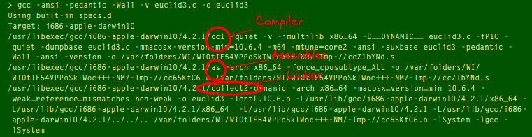

Libraries and Linker
In the last A&P post we ended with this example:
// declarations
extern int printf(const char*, ...); // print format -> write to output
extern int atoi(const char*); // ascii to integer
static int euclid(int, int);
int main(const int c, const char* v[])
{
printf("c is %d\n", c); // number of command line arguments passed
printf("v[0] is %s\n", v[0]); // path the program
const char* arg1 = v[1]; // const because declared as const in the parameter list
const char* arg2 = v[2];
printf("GCD of %s and %s is %d.\n", arg1, arg2, euclid(atoi(arg1), atoi(arg2))); // formatter "%s" expects char*
return 0;
}
int euclid(int x, int y)
{
if (x == y) return x;
else if (x > y) return euclid(x-y, y);
else return euclid(x, y-x);
}
Here two functions were used that are not a part of C. However they are a part of the C standard library (or libc). Declarations of libraries are pooled in header files. Header files may be included into the code via #included directives. There are two variants of the #include directive:
-
#include <file name>→ searches for file name in the systems path for include files- the system path can be set via compiler options (for
gccvia-I)
- the system path can be set via compiler options (for
-
#include "file name"→ searches for file name in the local path- in this case if the file is not found locally it will be searched for in the systems' path globally
Using header files the previous example would now look like this:
#include <stdio.h> // for printf
#include <stdlib.h> // for atoi
static int euclid(int, int);
int main(const int c, const char* v[])
{
printf("c is %d\n", c); // number of command line arguments passed
printf("v[0] is %s\n", v[0]); // path the program
const char* arg1 = v[1]; // const because declared as const in the parameter list
const char* arg2 = v[2];
printf("GCD of %s and %s is %d.\n", arg1, arg2, euclid(atoi(arg1), atoi(arg2))); // formatter "%s" expects char*
return 0;
}
int euclid(int x, int y)
{
if (x == y) return x;
else if (x > y) return euclid(x-y, y);
else return euclid(x, y-x);
}
The steps performed in the creation of a C program are not solely performed by the compiler. Rather a set of programs is called. More specifically the following happens:
- The preprocessor evaluates the directives and inserts the content of the header files into the code
- The compiler translates the C code into assembly language/code
- The assembler translates the assembler code into machine code and generates an object file
- The linker searches for external references in the object file und searches the associated objects in the standard libary or other libraries and ties it together into an executable program file.
So remember: Header files only define the interface to the standard library functions, not the implementation; they (as a rule) don't contain any executable code.
I was wondering why the linker runs after the assembler. Don't the library function need to be compiled and assembled as well?
It depends on the compiler and platform, but typically the standard library functions have already been compiled and collected into binary files that your code is linked against to produce an executable. So the header files contain declarations like our manually created declaration in the first code listing, ala extern int printf(const *char, ...). For example in the /usr/include/stdio.h on my system I can find this matching declaration extern int printf (const char *__restrict __format, ...); which also just declares and doesn't implement the function printf.
Furthermore the compiler can be instructed to only execute single steps of the creation process. For example the compiler option -E stops the process after the preprocessor. With -v (for verbose) the GNU compiler can be instructed to give a more detailed output of the steps involved and the process as a whole.

Python
Python is a scripting language that is interpreted at runtime. To execute a python script the interpreter has to be specified either directly when executing (python file.py) or in the first line of the file #! /usr/bin/env python and then it needs to be made executable via chmod a+x file.py. The euclidian algorithm in python would look as follows:
def euclid(x, y):
if x == y: return x
elif x > y: return euclid(x-y, y)
else: return euclid (x, y-x)
Python can be used interactively by going into a python shell and importing the function euclid from our "module"
$ python
$ from temp import euclid
$ euclid(45,30)
> 15
After the last example a file called temp.cpython-37.pyc can be found in our directory (in a folder called __pycache__ in my case). This file contains the intermediate represation (Zwischencode) byte code into which the program is translated before it is interpreted. If the file hasn't change a subsequent execution would lead directly to the execution of this byte code.
It is possible to translate a program explicitly without executing it:
import py_compile
py_compile.compile('xyz.py')
Alternatively all python files in a directory can be translated via python -mcompileall ..
Python offers a lot of predefined modules. sys for example provides an interface to the operating system and may be used to extend our program with IO:
from sys import argv
def euclid(x,y):
if x == y: return x
elif x > y: return euclid(x-y, y)
else: return euclid(x, y-x)
print(argv[0]) # file name
print("GCD is ", euclid(int(argv[1]), int(argv[2])))
Back to C
Going back to C (but the same applies elsewhere!) it is necessary to provide the input arguments on the command line when executing the euclidian algorithm program with IO. Else it would lead to a segmentation fault. The compiler cannot catch things like this because they are built on runtime assumptions. Therefore it is a good idea to validate those assumptions explicitly and program in a defensive way:
#include <stdio.h> // for printf
#include <stdlib.h> // for atoi
static int euclid(int, int);
int main(const int c, const char* v[])
{
if (c != 3) { // v[0] is program name
printf("Error unsufficient number of arguments\n");
return 1;
}
const char* arg1 = v[1]; // const because declared as const in the parameter list
const char* arg2 = v[2];
printf("GCD of %s and %s is %d.\n", arg1, arg2, euclid(atoi(arg1), atoi(arg2))); // formatter "%s" expects char*
return 0;
}
int euclid(int x, int y)
{
if (x == y) return x;
else if (x > y) return euclid(x-y, y);
else return euclid(x, y-x);
}
Since such validation of assumptions is really common, a library function assert exists to achieve this:
#include <assert.h> // <- NEW for assert!
#include <stdio.h>
#include <stdlib.h>
static int euclid(int, int);
int main(const int c, const char* v[])
{
assert(c == 3);
const char* arg1 = v[1]; // const because declared as const in the parameter list
const char* arg2 = v[2];
printf("GCD of %s and %s is %d.\n", arg1, arg2, euclid(atoi(arg1), atoi(arg2))); // formatter "%s" expects char*
return 0;
}
int euclid(int x, int y)
{
if (x == y) return x;
else if (x > y) return euclid(x-y, y);
else return euclid(x, y-x);
}
Errors
There are at least three types of erros that can be distuingished:
- formal, "incorrect" C → syntax error (compiler error)
- missing objects (e.g functions) or name collisions → linker error
- intention has not been implemented correctly → semantic error (logic error)
The first two of these are usually catched when translating the program.